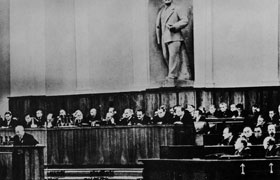

Lezione 20  La guerra fredda
La guerra fredda

Nel ventesimo congresso del Partito comunista sovietico, che si svolse a Mosca nel febbraio del 1956, il segretario Nikita Krusciov presentò un rapporto che conteneva un durissimo attacco a Stalin, morto da tre anni, ma ancora venerato in tutto il paese. Il documento era segreto, ma i suoi contenuti trapelarono e avviarono un profondo ripensamento in molti partiti comunisti, soprattutto in Occidente. Ecco una scelta dei brani più significativi.
«Dopo la morte di Stalin il Comitato centrale del partito aveva già dato inizio a una politica tendente a spiegare brevemente, ma con chiarezza, che era intollerabile ed estraneo allo spirito del marxismo-leninismo esaltare una persona e farne un superuomo fornito di qualità soprannaturali a somiglianza di un dio. Un tale uomo è ritenuto in grado di saper tutto, veder tutto, pensare per tutti, fare tutto ed essere infallibile. [...]
Quando si analizza la condotta di Stalin nei confronti della direzione del partito e del paese, quando ci si ferma a considerare ciò che Stalin ha commesso, bisogna ben convincersi che i timori di Lenin erano giustificati. I difetti di Stalin, che al tempo di Lenin erano solo in germe, avevano assunto il carattere di un autentico dispotismo, che ha arrecato indicibili danni al nostro partito. [...]
Dobbiamo esaminare seriamente e analizzare in maniera corretta questo problema, per essere in grado di prevenire ogni possibilità di un ritorno, sotto qualsiasi forma, di ciò che è avvenuto durante la vita di Stalin, che non tollerava minimamente la direzione e il lavoro collegiali e praticava una brutale violenza non solo contro tutto ciò che a lui si opponeva, ma anche contro tutto ciò che contraddiceva il suo temperamento capriccioso e dispotico. [...]
Stalin non agiva con la persuasione, con le spiegazioni e la paziente collaborazione con gli altri, ma imponendo le sue idee ed esigendo una sottomissione assoluta. Chiunque si opponeva ai suoi disegni o si sforzava di far valere il proprio punto di vista e la validità della sua posizione era destinato ad essere estromesso da ogni funzione direttiva, e, in seguito, "liquidato" moralmente e fisicamente. Questo fu particolarmente vero nel periodo seguito al XVII Congresso, quando eminenti dirigenti e semplici militanti del partito, gente onesta e devota alla causa del comunismo, caddero vittime del dispotismo di Stalin».